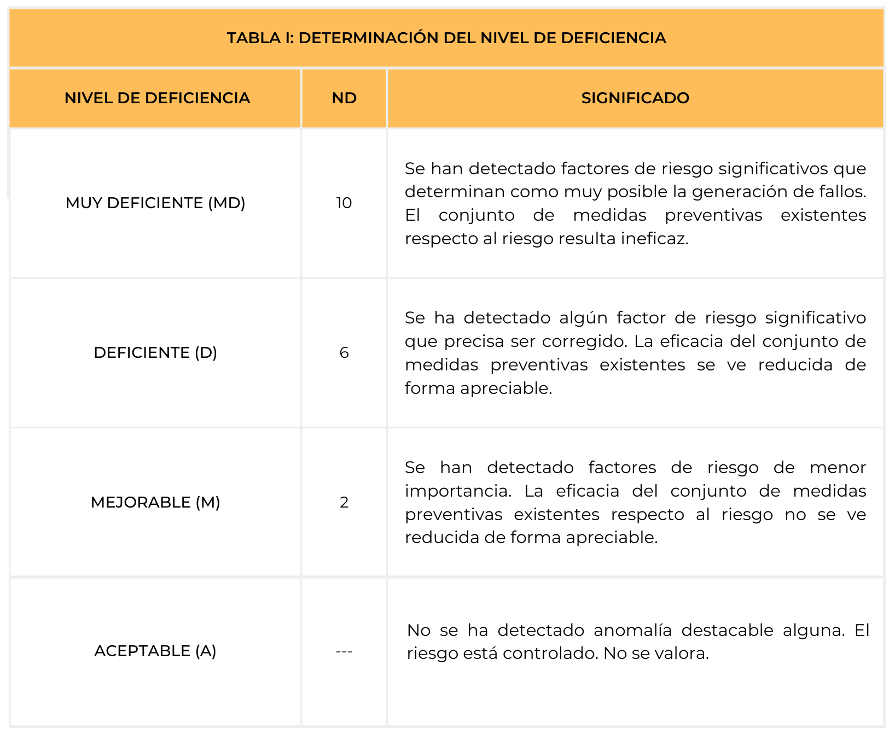
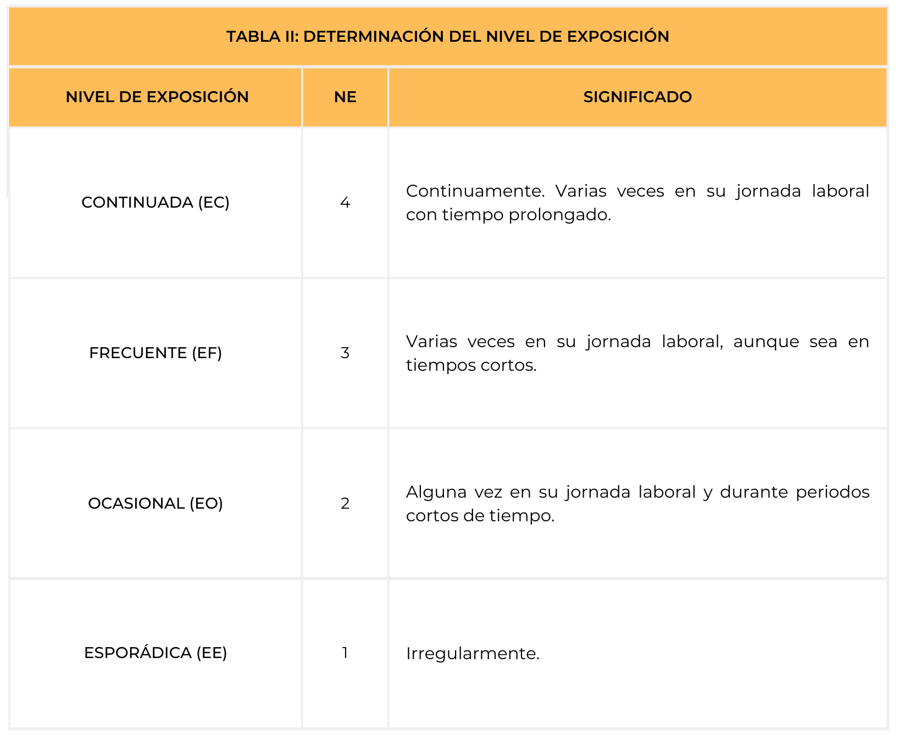
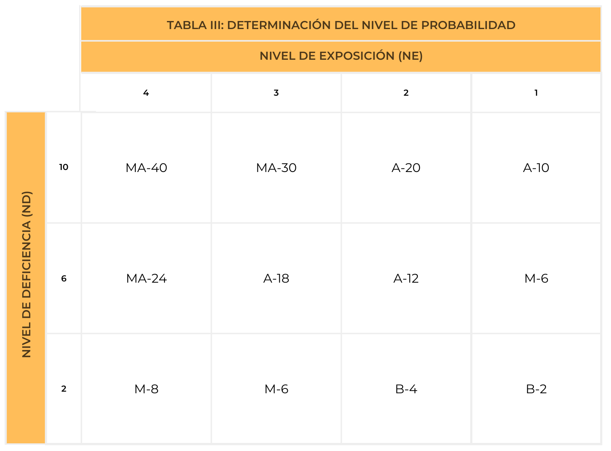
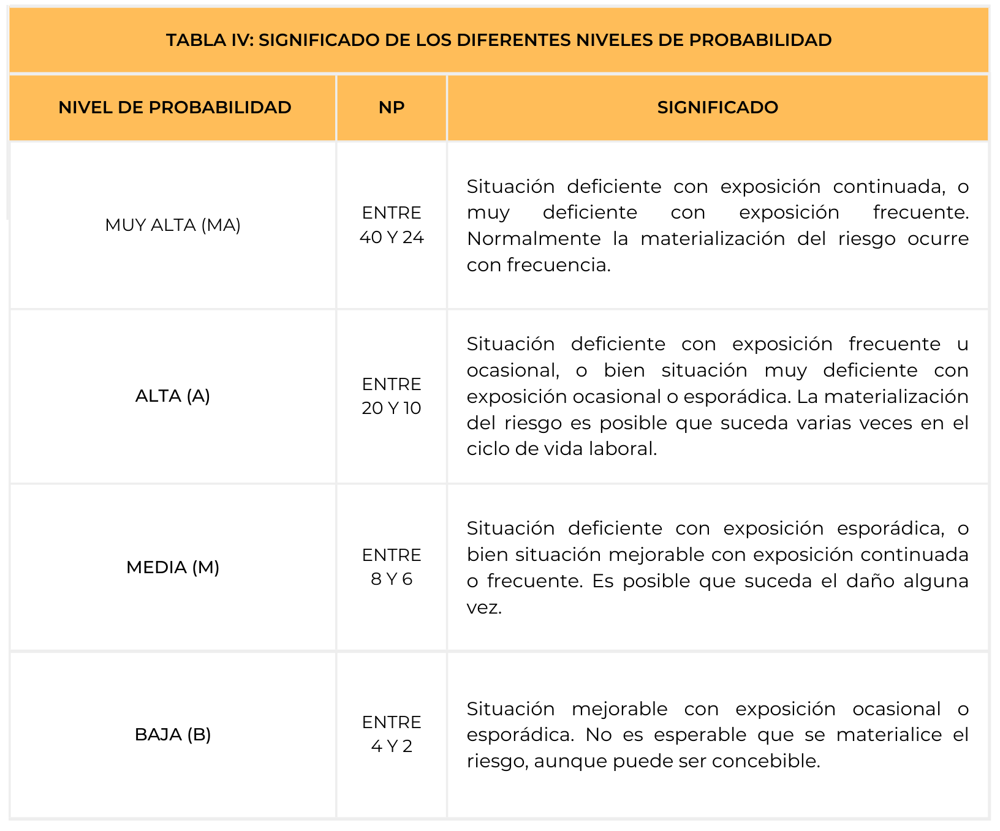
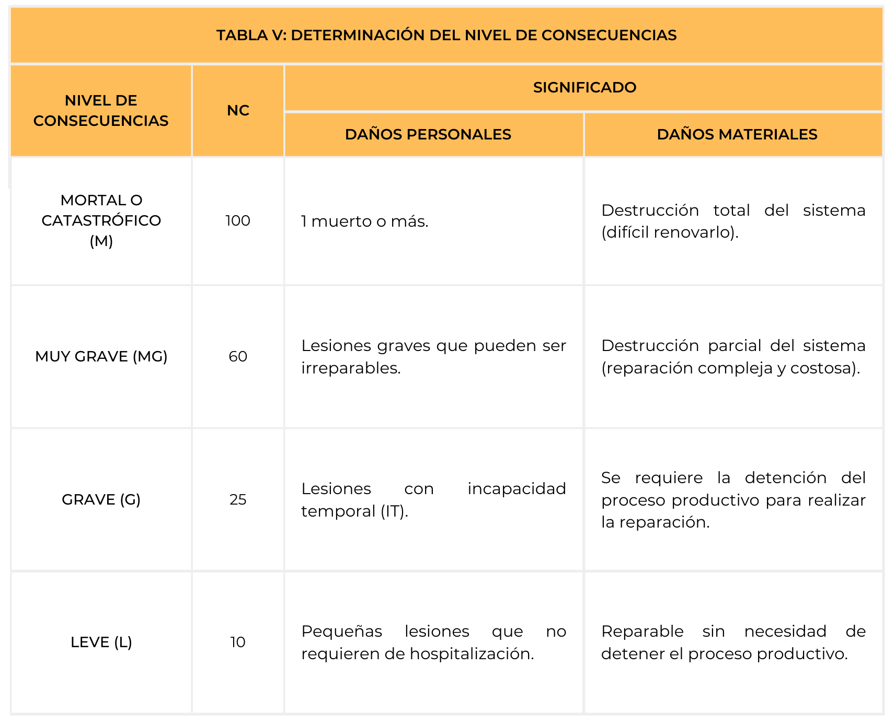
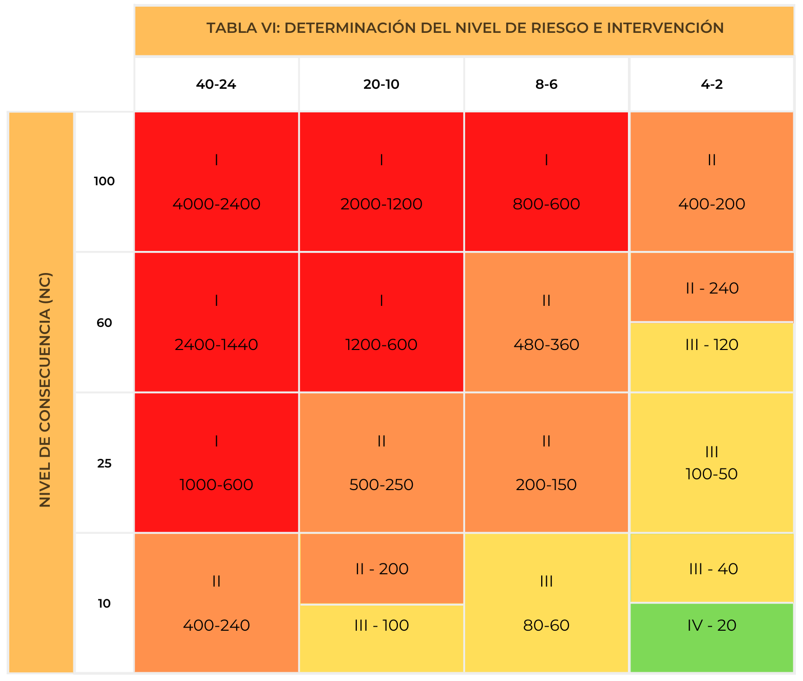
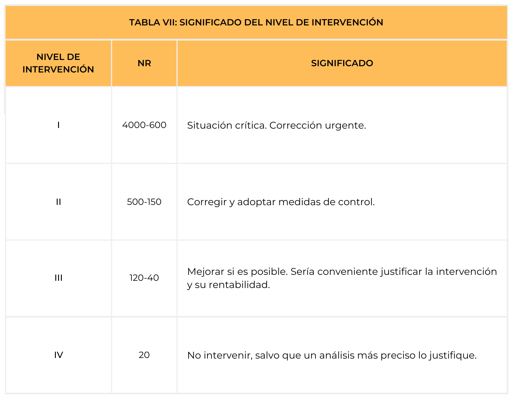

El método de la NTP 330, sirve para medir el riesgo unitario o riesgo por trabajador, característica fundamental de los métodos simplificados, categoría a la que pertenece éste. No pretenden determinar el valor real del riesgo, es decir, la magnitud del daño esperado en un periodo de tiempo concreto, sino que se conforman con una aproximación a su medida en términos de nivel, usando escalas ordinales.
El método define también el nivel de probabilidad (NP) como producto de ND x NE y el nivel de intervención (NI). La aplicación del método para estimar el nivel de riesgo (NR) de una determinada situación de riesgo en un puesto de trabajo concreto comporta los siguientes pasos:
Estimación del nivel de deficiencia (NR).
Estimación del nivel de exposición (NE).
Estimación del nivel de probabilidad (NP).
Estimación del nivel de consecuencias (NC).
Determinación del nivel de riesgo (NR) y nivel de intervención (NI).
Nivel de riesgo
Nivel de deficiencia
Nivel de exposición
Nivel de consecuencias
Determinación del nivel de deficiencia (ND)
La forma ideal de aplicar este método es utilizando un cuestionario de chequeo que incluya los factores de riesgo apropiados y una indicación acerca de la importancia que cabe atribuirles como elementos causales del daño. Tales indicaciones, sea cual sea el sistema que se use, han de ajustarse a la escala de ND que recoge la tabla I.

Elaboración propia. Determinación del nivel de deficiencia
De este modo, el nivel de deficiencia que se obtiene con la aplicación del cuestionario será el resultado de los factores de riesgo que estén realmente presentes y del peso causal preasignado a cada uno.
Como puede verse, la disponibilidad y el uso de cuestionarios estandarizados constituyen un requisito ineludible de objetividad.
Determinación del nivel de exposición (NE)
Es una medida de la frecuencia con la que se produce la exposición al riesgo en el puesto de trabajo en cuestión, ajustada a los criterios de la tabla II:

Elaboración propia. Determinación del nivel de exposición
Naturalmente, como se refiere a características del puesto cuyo riesgo se está evaluando, habrá de estimarse sobre el terreno. Como puede observarse, mientras la escala de ND va de 0 a 10, la de NE va de 1 a 4. Esta diferencia responde a la intención deliberada de otorgar más importancia en el cálculo del nivel de riesgo a las deficiencias existentes que a la frecuencia de exposición, de modo que una deficiencia alta y una exposición baja resulten en un riesgo mayor que una exposición alta y una deficiencia baja.
Determinación del nivel de probabilidad (NP)
Se calcula como producto de ND x NE. El resultado numérico obtenido se categoriza en cuatro niveles, según se señala en la tabla III.

Elaboración propia. Determinación del nivel de probabilidad
El significado de cada nivel aparece recogido en la tabla IV:

Elaboración propia. Significado de los diferentes niveles de probabilidad
Nivel de deficiencia
Nivel de exposición
Determinación del nivel de consecuencias (NC)
El método considera también cuatro niveles de consecuencias (NC), distinguiendo entre daños personales y materiales, y estableciendo una correspondencia entre ellos tal como ilustra la tabla V:

Elaboración propia. Determinación del nivel de consecuencias
En principio, el nivel de consecuencias no se estima en campo sino que se asigna a cada situación de riesgo en función del tipo de accidente a que se refiere, considerando la gravedad de los daños normalmente esperados.
La escala de NC es la más amplia de todas, con un rango de 10 a 100, al objeto de primar el peso de las consecuencias, con respecto a los otros factores, en la medida del riesgo.
Determinación del nivel de riesgo (NR) y nivel de intervención (NI)
Como ya se indicó, el nivel de riesgo (NR) se determina como producto de ND x NE x NC o, lo que es igual, como producto de NP x NC.
Al valor obtenido, por medio de su inclusión en uno de los grupos clasificatorios de la tabla VI se le asigna una prioridad de intervención cuyo significado se recoge en la tabla VII.

Elaboración propia. Determinación del nivel de riesgo e intervención
Elaboración propia. Significado del nivel de intervención
De este modo, en este último paso de la aplicación del método puede decirse que se solapan dos etapas: la última de la evaluación propiamente dicha, que sería la jerarquización de los riesgos, y la primera de la planificación preventiva, que correspondería a la priorización de las medidas de actuación.
Nivel de riesgo
Nivel de deficiencia
Nivel de exposición
Nivel de consecuencia
Nivel de probabilidad
Nivel de riesgo
Nivel de consecuencia
Nivel de probabilidad
Ejemplo
La empresa Politeknia S.L. ha realizado una evaluación de riesgos de la carga física que deben soportar los trabajadores empleando para ello el método simplificado de evaluación de la NTP 330 en el que aplicaremos la siguiente fórmula:
Tras aplicar el cuestionario de chequeo nº19 (carga física) del método de evaluación de las condiciones de trabajo en la PYME el resultado obtenido ha sido DEFICIENTE.
Para un resultado de DEFICIENTE se le asigna un valor de 6.
Tras la observación sobre el terreno se ha determinado que el riesgo de carga física se produce de forma FRECUENTE varias veces durante la jornada laboral.
Para un resultado de FRECUENTE se le asigna un valor de 3.
Al haber obtenido un resultado de 18, la probabilidad se califica como ALTA, caracterizada por ser una situación deficiente con exposición frecuente u ocasional, o bien situación muy deficiente con exposición ocasional o esporádica. La materialización del riesgo es posible que suceda varias veces en el ciclo de vida laboral.
Estimación del nivel de consecuencias (NC)
A tenor de los daños normalmente esperados como consecuencia del exceso de carga física se asignar a este nivel un valor de 25 (GRAVE) debido a que cabe esperar lesiones con incapacidad temporal (IT)